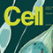

News Archives: Nov 1, 2003 - Jan 6, 2017
53 stories listed.
|
A Master Regulator for Circadian Gene Expression [O'Shea Lab]
- Dec. 20, 2013
Organisms from humans to bacteria utilize endogenous timing mechanisms called ... Tags: 2013, Cell, Erin O'Shea, publication |
|
| Thirteen MCB Post-Doctoral Fellows Receive Fellowships - Dec. 17, 2013 | |
|
What Does it Take to be Sexy? [Murray Lab]
- Dec. 4, 2013
There are two answers to this question, the master regulators ... Tags: Andrew Murray, Genetics, publication |
|
 |
New Tools Light Up the Intricacies of the Brain [Lichtman Lab]
- Nov. 27, 2013
Technologies that can help map the brain and its activity ... Tags: 2013, Jeff Lichtman, MCB in the NEWS, Science |
 |
Bacteria Remember the Past when Deciding about the Future [Losick Lab]
- Nov. 20, 2013
Bacillus subtilis is a bacterium with many talents. Some cells ... Tags: 2013, Nature, Richard Losick, publication |
|
Introducing the Five MCB Preceptors
- Oct. 21, 2013
Preceptors are full-time equivalent faculty who want to teach at ... Tags: 2013, MCB faculty, preceptor, undergraduate education |
|
|
Newly Tenured, Nao Uchida Decides on Risk Taking
- Oct. 9, 2013
As a postdoctoral researcher at Cold Spring Harbor, Naoshige (Nao ... Tags: 2013, Naoshige Uchida, Promotion, Tenure |
|
|
Sriram Srikant and Ann Ran Receive Department Honors
- Oct. 4, 2013
Two MCB graduate students, Sriram Srikant (G3, Rachelle Gaudet and ... Tags: 2013, MCB award, Meselson Prize, Peralta Prize, graduate student award |
|
 |
Rob Lue on How Online Courses Can Improve Life on Campus
- Sept. 24, 2013
Writing in the August 2013 issue of Scientific American, Robert ... Tags: 2013, Online Education, Robert Lue, Scientific American, edX |
|
Professor Joshua Sanes in the News
- Sept. 24, 2013
Tags: 2013, In the News, Joshua Sanes, New York Times |
|
|  |
SWR1 [Leschziner Lab]
- Sept. 12, 2013
Genome packaging is a universal process in eukaryotes. In the ... Tags: 2013, Andres Leschziner, Cell, publication |
|
MCB121 [Prof. Karine A. Gibbs]
- Sept. 4, 2013
Tags: 2013, Fall semester, Karine Gibbs, MCB 121 |
|
|
MCO/EPB Student Sriram Srikant Awarded HHMI International Fellowship
- Aug. 19, 2013
MCO/EPB graduate student Sriram "Sri" Srikant (rising G3, Murray ... Tags: 2013, Andrew Murray, Graduate Student Fellowships, HHMI International Research Fellowship, Howard Hughes Medical Institute (HHMI), Rachelle Gaudet |
|
|
Tom Pollard Will Deliver the 2014 Paul Doty Lecture
- Aug. 19, 2013
Professor Tom Pollard will deliver the 2014 Paul Doty Lecture ... Tags: 2013, Paul Doty Lecture |
|
|
Four MCB Post-Doctorates Receive Fellowships
- Aug. 6, 2013
Four MCB post-doctoral researchers have been awarded post-doctoral fellowships from ... Tags: 2013, Post Doctorates Fellowships, awards |
|
|
Morphogen Gradients, Non-Coding RNAs, and Multicolored Fish [Schier Lab]
- July 11, 2013
In three papers published in Development, the Schier lab suggests ... Tags: 2013, Alexander Schier, Development, publication |
|
|
Sharad Ramanathan Receives Tenure
- July 8, 2013
The MCB department is pleased to announce the tenure of ... Tags: 2013, Promotion, Sharad Ramanathan, Tenure |
|
|
Outreach Gives High School Students a Harvard Lab Experience
- July 4, 2013
One morning before dawn in early April, two dozen high ... Tags: MCB Outreach Program, 2013, High School Outreach |
|
|
Body Building in E. coli [Berg Lab]
- July 2, 2013
Contact with a surface is believed to trigger bacterial swarmer-cell ... Tags: 2013, Howard Berg, PNAS, publication |
|
|
Symposium Features Physical Biology Research
- July 2, 2013
On Monday, June 10, the annual Engineering and Physical Biology ... Tags: 2013 |
|
 |
The Life of an Axon [Sanes Lab]
- June 24, 2013
Neurons send signals to other neurons along axons. Their growth ... Tags: 2013, Joshua Sanes, Neuron, publication |
|
Cracking the Temporal Code for Smell using Light [Murthy and Uchida Labs]
- June 14, 2013
When we sniff an odor, it is first detected by ... Tags: 2013, Naoshige Uchida, Nature Neuroscience, Venkatesh Murthy, publication |
|
|
Choroid Plexus a Source of Key Factor in Brain Plasticity [Hensch Lab]
- June 14, 2013
Tags: 2013, Cell Reports, Takao Hensch, publication |
|
 |
EPB to Hold Annual Symposium, Monday, June 10
- June 5, 2013
On Monday, June 10, the annual Engineering and Physical Biology ... Tags: 2013, Engineering and Physical Biology (EPB), epb, symposium |
|
Invitation to the 2013 Boston Bacterial Meeting
- June 4, 2013
Tags: 2013, BBM, Boston Bacterial Meeting |
|
|
Brainbow 2.0 [Lichtman and Sanes Labs]
- May 24, 2013
In 2007, the labs of Professors Jeff Lichtman and Josh ... Tags: 2013, Nature Methods, publication |
|
 |
Eight Undergraduates Receive Awards
- May 22, 2013
Eight undergraduates concentrating in Chemical and Physical Biology (CPB), Molecular ... Tags: 2013, Bowdoin Prize in the Natural Sciences, John E. Dowling Thesis Prize, Lawrence J. Henderson Prize, Thomas Temple Hoopes Prize, Undergraduate Prizes, undergraduate education |
|
Carolyn Bertozzi to Deliver 2013 Paul Doty Lecture
- May 14, 2013
Professor Carolyn Bertozzi will deliver the 2013 Paul Doty Lecture ... Tags: 2013, Paul Doty Lecture |
|
|
Robust Clocks in Growing Bacteria [O'Shea Lab]
- May 10, 2013
Living organisms tightly coordinate their physiology with the day and ... Tags: 2013, Erin O'Shea, Science, publication |
|
|
Hopi Hoekstra Appointed HHMI Investigator
- May 9, 2013
The prestigious Howard Hughes Medical Institute (HHMI) has appointed Hopi ... Tags: 2013, Hopi Hoekstra, Howard Hughes Medical Institute (HHMI) |
|
|
Michael K. Rosen to Deliver 2013 John T. Edsall Lecture
- May 7, 2013
Michael K. Rosen, a Howard Hughes Medical Institute Investigator and ... Tags: 2013, John T. Edsall Lecture |
|
|
How Does E. coli Segregate Its Sisters without a Spindle? [Kleckner Lab]
- April 26, 2013
The E. coli chromosome is a single circular unit which ... Tags: 2013, Cell, Nancy Kleckner, publication |
|
|
MCB Graduate Student Tessa Montague Receives NDSEG Fellowship in 2013
- April 26, 2013
Tessa's enthusiasm for research began as a high school ... Tags: 2013, Alexander Schier, Graduate Student Fellowships, National Defense Science and Engineering Graduate Fellowship |
|
|
MCB Graduate Student Kenneth Skinner Awarded 3 Fellowships
- April 26, 2013
MCB Graduate Student Kenneth Skinner Awarded 3 Fellowships Tags: 2013, Ford Foundation Predoctoral Fellowship, Graduate Student Fellowships, MCB Graduate Student Kenneth Skinner Awarded 3 Fellowships (GEM), NSF Graduate Research Fellowship, Rachelle Gaudet |
|
|
Eric Lander to Give 2013 Prather Lectures April 24-26
- April 22, 2013
Tags: 2013, Prather Lectures |
|
|
Working Hard or Hardly Working? [Uchida Lab]
- April 15, 2013
How many decisions did you have to make today? From ... Tags: 2013, Naoshige Uchida, Nature Neuroscience, publication |
|
|
Five MCB Undergraduate Students Receive NSF Fellowhip in 2013
- April 15, 2013
On behalf of the entire Department, I would like to ... Tags: 2013, Graduate Student Fellowships, National Science Foundation Graduate Research Fellowship, fellowship |
|
|
Four MCB Graduate Students Receive NSF Fellowships in 2013
- April 11, 2013
Four first-year MCB graduate students have been awarded prestigious NSF ... Tags: 2013, Graduate Student Fellowships, MCB Graduate Student, National Science Foundation Graduate Research Fellowship, fellowship |
|
|
This years Microbial Sciences Initiative (MSI) Symposium Marks 10 Years of the MSI! (Saturday, April 13)
- April 4, 2013
Tags: 2013, MSI, Microbial Sciences Initiative at Harvard, Microbial Sciences Symposium |
|
|
How Sweet It Is (To Be Stuck By You) [Murray Lab]
- April 2, 2013
Tags: 2013, Andrew Murray, eLife, publication |
|
|
Ethan Garner Chosen as Searle Scholar
- April 1, 2013
Tags: 2013, Ethan Garner, Searle Scholar, award |
|
|
Molecular Clockwork of Bacterial Time-Keeping [O'Shea Lab]
- March 28, 2013
Tags: 2013, Erin O'Shea, Molecular Cell, publication |
|
|
On April 11, Steve McKnight Presents 2013 Bloch Lecture
- March 28, 2013
This year's Bloch Lecture will be given by Steve ... Tags: 2013, Bloch Lecture |
|
|
One Gene, Many Mutations, Contribute to Mouse Survival [Hoekstra Lab]
- March 14, 2013
Tags: 2013, Hopi Hoekstra, Science, publication |
|
|
Robert Lue Fills New Faculty Director Position at Bok Center
- Feb. 25, 2013
Robert A. Lue, professor of the practice of molecular and ... Tags: 2013, Derek Bok Center for Teaching and Learning, Robert Lue |
|
|
Losick Wins Harvard Prize for Excellence in Science Teaching
- Feb. 6, 2013
Richard Losick has received Harvard's 2013 Fannie Cox Prize ... Tags: 2013, Fannie Cox Prize for Excellence in Science Teaching, Richard Losick, award |
|
|
Nature Video Feature [Engert Lab]
- Jan. 25, 2013
Tags: 2013, Florian Engert, Nature, video |
|
|
Modularity of Transcription Factors Enables Multifunctional Signal Processing [O'Shea Lab]
- Jan. 24, 2013
Tags: 2013, Erin O'Shea, Science |
|
|
Digging for Genes that Contribute to Behavioral Evolution [Hoekstra lab]
- Jan. 16, 2013
Tags: 2013, Hopi Hoekstra, Nature |
|
|
Harvard's Life Sciences Outreach Program at 10 Years
- Jan. 8, 2013
Tags: MCB Outreach Program, 2013, Catherine Dulac, High School Outreach, Robert Lue |
|
|
Ethan Garner Receives Smith Family Foundation Biomedical Research Award
- Jan. 4, 2013
Tags: 2013, Ethan Garner, Smith Family Foundation, award |
|
|
Undergraduate Summer Internship at MCO: Gateway to Academic Excellence
- Jan. 3, 2013
Tags: 2013, MCO Outreach Program, SROH, Summer Program, Undergraduate Summer Internship, undergraduate education |
|
|
Deciphering a Regulatory Code within the Genetic Code [Cluzel lab]
- Jan. 2, 2013
Tags: 2013, PNAS, Philippe Cluzel |